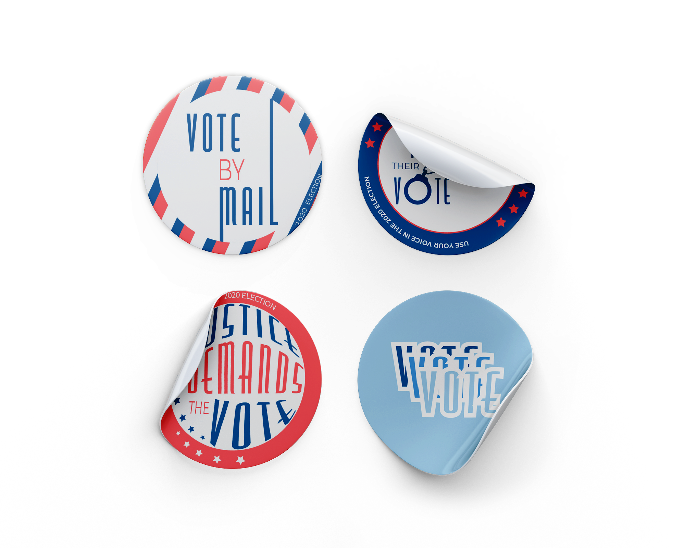

I Voted Stickers
During the 2020 presidential election, my typography professor assigned a quick exercise inspired by the famous "I Voted" stickers. I had to design my own voting stickers with an emphasis on the type. Three of the five designs were inspired by voter suppression issues, a topic came to the forefront of the public's attention during the election.

Absentee Voting: The sticker on the left drew inspiration from the massive increase in voting by absentee ballot as a result of the COVID-19 pandemic.
Voter Restoration: These were inspired by the felony disenfranchisement laws, which have origins in the Jim Crow era and disproportionately affect Black people. The three stars symbolize Iowa, Florida, and Kentucky, the three states which have the most severe policy of disenfranchising someone with a felony conviction for life.
Women's Suffrage: I used "Justice Demands the Vote," a motto of the American Women's Suffrage Movement, and morphed it to create the 3D feel of a pin, which was a popular artifact of the suffragette.